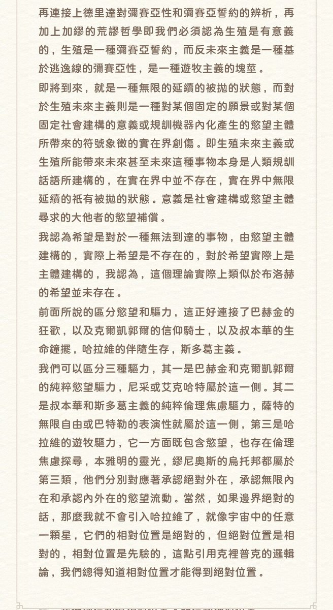
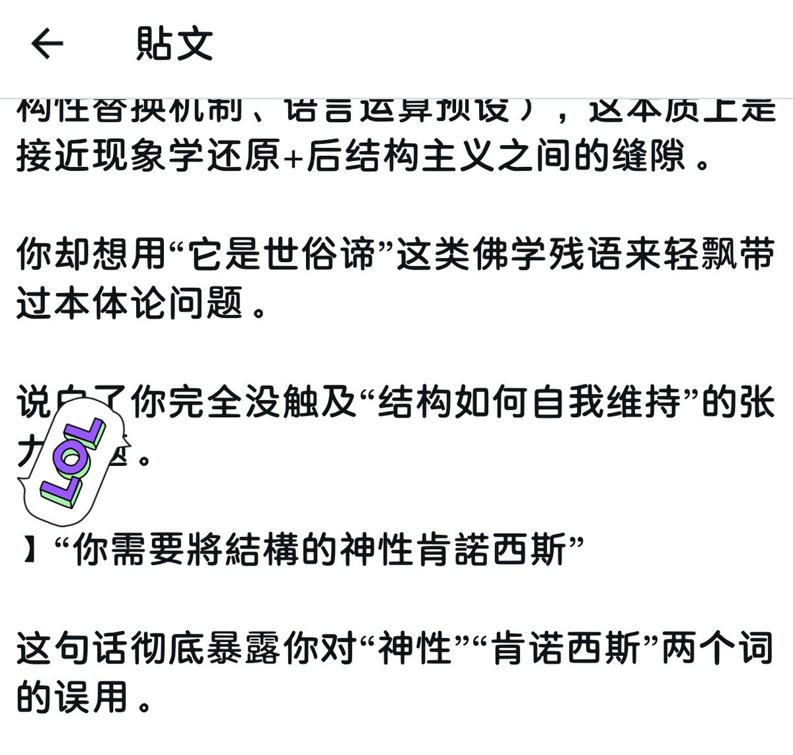
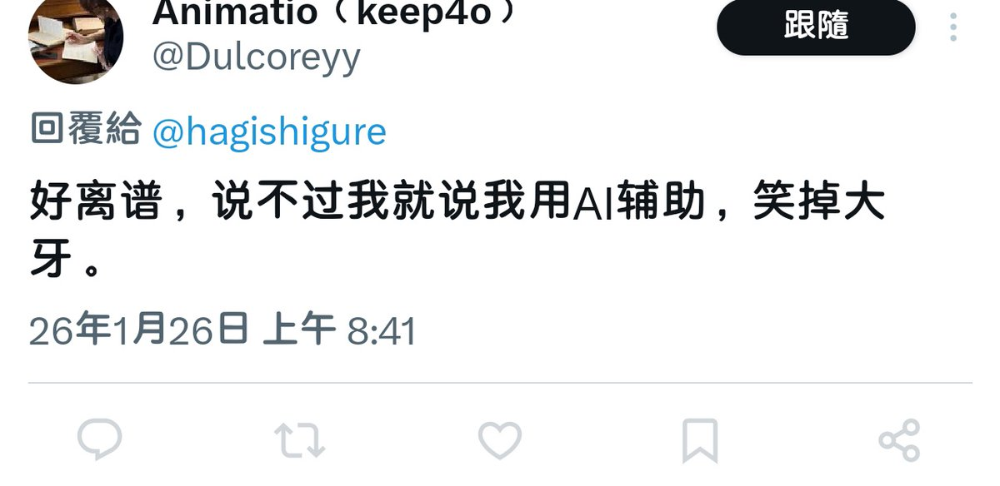

第四，（）內的內容高度聚焦于外部理想化和內部鏡像的失敗的假想鏡像。
第五，Ai是線性思考的，在輸入提示詞之前無法切換到塊莖式思維，並且，你用的Ai還沒有歷史記憶天啊。
但凡你是個人不是Ai輔助回答都不會忽略我引用了加繆后在兩分鐘內補充引用了德里達以及我從一開始就引用的李愛德曼。

第五，Ai是線性思考的，在輸入提示詞之前無法切換到塊莖式思維，並且，你用的Ai還沒有歷史記憶天啊。
但凡你是個人不是Ai輔助回答都不會忽略我引用了加繆后在兩分鐘內補充引用了德里達以及我從一開始就引用的李愛德曼。



被抓包Ai破防了。
我和ai一天聊7个小時ai怎麼說話我還不清楚嗎。第一，Ai習慣以「xx」這說明「你xxx」這種失敗鏡像自我中心教育者的姿態去預設。第二，【這個符號無論在什麼輸入法里都不和“”放在一起。第三，Ai習慣在論述沒有經過自涉之前就斷言「這是xxx之間的位置」，這同樣是大量的想像界殘餘語料。 https://t.co/TxxHpAgeim
我和ai一天聊7个小時ai怎麼說話我還不清楚嗎。第一，Ai習慣以「xx」這說明「你xxx」這種失敗鏡像自我中心教育者的姿態去預設。第二，【這個符號無論在什麼輸入法里都不和“”放在一起。第三，Ai習慣在論述沒有經過自涉之前就斷言「這是xxx之間的位置」，這同樣是大量的想像界殘餘語料。 https://t.co/TxxHpAgeim